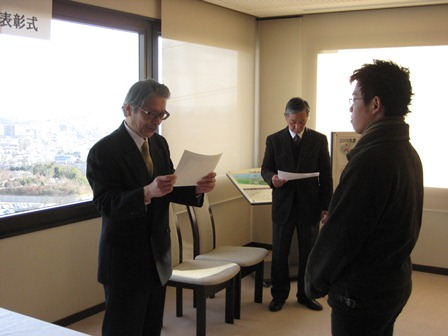
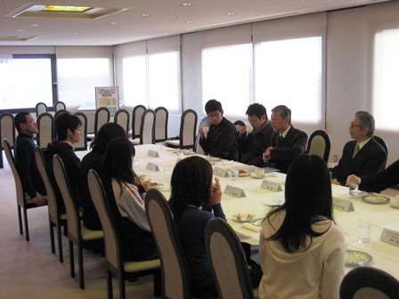

| 表彰式の様子 |
|  |
2009年度のベストリーダー賞表彰式を、平成22年１月14日（木）
15:00〜、岡山理科大学11号館８階ラウンジにて開催しました。 |
| 表彰式の後、受賞者と図書館職員の間で懇談し、感想や意見を聞きました。 |
 |
| 大賞受賞者の感想 |
|
理工系1位
人文・社会科学2位
文学3位
紙本 裕一
Q 受賞してのご感想は？
A 驚き反面少々悲しんでいます。もっと多くの方が本を借りていると思っていましたが、活字離れが深刻であることを気付かされました。
ですが、賞を授与していただけるのはとても光栄なことです。
Q 受賞の秘訣は？
A 授業で必要なテキスト、復習用の参考書を、とにかく借りて、レポートの際にも借りる。また、自習用としても使用すると、あって言う間に行きます。
|
文学1位
塩本 逹也
Q 受賞してのご感想は？
A 読みたい本を読んでいただけなので、正直なところ驚いています。以前からこの賞のことは知っていたので、受賞できたことは大変うれしく思います。
Q 受賞の秘訣は？
A 本を好きで、読みたい本を読んでいくことが、大切だと思います。
|
| 大賞受賞者の推薦本 |
|---|
| 署名 / 著者 [請求記号] | 推薦の理由 |
|---|
| 基礎講義線形代数学 / 二木昭人 [411.3/Fu] 11号館3F |
講義で足りない部分を補ってくれるからです。 |
| 新TOEICテスト英単語・熟語マスタリー2000 [830.79/Sh] 21号館特設コーナー |
TOEICを学ぶ上で単語帳は必須で、この本は非常に取りかかりやすかったです。
この単語帳のおかげでスコアが200点あがりました。 |
| 手にとるようにわかる若手CEと学生のための臨床工学ハンドブック上・下 / 海老根東雄[監修] [492.8/To/1, 492.8/To/2] 11号館2F |
写真や図を多く載せていて、どこに目を付けて機器を見ていくのかわかりやすい入門書。 |
| 新選組血風録 / 司馬遼太郎 [908/Ka/S] 10号館2F文庫 |
新撰組の様々な人物のエピソードが短編形式で読めるのに、司馬遼太郎の世界にふれられ、おもしろい。 |
| やさしく学べる微分方程式 / 石村園子 [413.6/Is] 11号館3F |
数学の講義のときによくおせわになったからです。 |
| そうだったのか！中国 / 池上彰 [222.07/Ik] 21号館 |
中国という大国について、楽しく学べる。 |
| 子どもが減って何が悪いか！ / 赤川学 [334.3/Ak] 21号館 |
|
| イラストレイテッド ハーパー生化学（原書27版）/ [464/Ha] 11号館3F |
医学の視点から見た生化学の教科書の中で、1番役に立った本だから。
独学も可であるし、本当に一押しの本です。原書（英語）もおすすめです。
|
| 真実一路 / 山本有三 [908/Sh/Y] 10号館2F文庫 |
生きていく上で真実をつらぬきとおすことの難しさを思い知った本だから。 |
| 「戯言」シリーズ / 西尾維新 [913.6/Ni] 10号館2F |
推理小説と怪奇小説が合わさったような作風で、なによりも1冊が分厚いため、読む時間がかかるのがお薦めです。 |
| 福岡伸一の著書 [460.4/Fu, 498.5/Fu, etc] 11号館 |
知的好奇心をかき立てられます。 |
| 新人賞受賞者の感想 |
|
理工系1位
北原 優
Q 受賞してのご感想は？
A 全く意識していなかったので、とても驚いていますが、受賞できて非常に嬉しく思います。
もともと、本を読むことが好きなので、これからも図書館を大いに活用していきたいです。
Q 受賞の秘訣は？
A 分野に関わらず、多くの分掌をよむこと。
多くの本を開けば、必ず心に残る一節が見つかると思います。
|
人文・社会科学1位
山口 あゆみ
Q 受賞してのご感想は？
A 賞ついては知っていましたが、自分が受賞できるとは思ってもいませんでした。
私が借りていた本の多くは洋書でした。洋書といっても、初心者向けの薄い絵本のような本だったので、この賞をいただくのはなんだか申し訳ない気がします。
もともと気分転換のつもりで借りていたのに、それが積み重なってこの賞を受賞できうれしかったです。
Q 受賞の秘訣は？
A とりあえず図書館に行き、とりあえず気になる本があれば手にとって見る。このとりあえずが秘訣ではないかなと思います。
|
| 新人賞受賞者の推薦本 |
|---|
| 署名 / 著者 [請求記号] | 推薦の理由 |
|---|
| SYNC : なぜ自然はシンクロしたがるのか / スティーヴン・ストロガッツ [404/St] 11号館3F |
私たちが普段は気付くことのない多くのものと密接に”同期”しながら、非常に広いコミュニティのなかで生きているということを教えてくれた、奥が深い本です。 |
| ぼく自信あるいは困難な存在 / Cocteau, Jean [908/Ch/C] 21号館文庫 |
夢のような文章と躍動する表現で、私自身の視野を一瞬にして広げてくれた神秘的でとても素敵な本です。 |
| 世界カエル図鑑300種 / クリス・マチソン [487.88/Ma]11号館3F |
見ていて楽しめる。 |
| こころ / 夏目漱石 [908/Sh/N] 10号館2F文庫 |
精神的に向上心のないものはばかだ。 |
| 空の色と光の図鑑 / 斎藤文一文 ; 武田康男写真 [451.75/Sa] 11号館3F |
全てのページがオールカラーで写真付き。
空を眺めることが大好きな人は、空の変化やしくみを詳しく知ることができるので、お薦めです。 |
| 教職教養教育史 : これだけは暗記しとこう / 教員採用試験情報研究会編著 [373.7/Ky/10] 21号館特設コーナー |
分かりやすく載っている。 |
| 再生の息吹を聞け / NHKプロジェクトX制作班編 [210.76/Nh] 21号館 |
苦境から立ち上がる人間の強さが分かる。 |
| 聖なる黒夜 上・下 / 柴田よしき [908/Ka/S] 10号館2F文庫 |
|